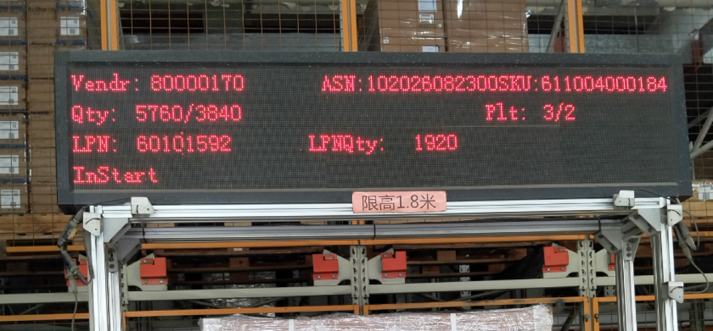

业务范围
- 来料入库、退料入库、质检还料
- 103 / 106 / 109 三个常规入库口；263 为备用入库口
| 需求类型 | 功能 | 功能描述 |
|---|---|---|
| 入库 | 来料入库 | 采购到货物料经 FWMS 建单、组盘和清点后，通过常规口 103 / 106 / 109 或备用口 263 进入音锋自动化库。 RCS 在入口识别 LPN 后请求入库；WCS 获取完整组盘明细、生成入库业务数据。搬运按两段请求执行：先返回母车轨道和货道，到达母车轨道接货点后再返回深度；RCS 到达指定深度后反馈完成。 留样托单独组盘，来料入库阶段暂不进入自动化库；质检完成后通过质检还料流程进入自动化库。 |
| 入库 | 退料入库 | 退料经 FWMS 组盘、清点后上架；不留样、不检验包装，其余按主流程执行。 |
| 入库 | 质检还料 | 覆盖原箱还料、部分损耗后还料；全部损耗无实物入库。 多个入库单的物料可组盘到同一个留样托；WCS 按留样托 LPN 获取全部关联入库单的组盘明细，并保留各明细的单据归属。 每次处理一个 UPN，按外部单号＋供应商＋SKU 查找对应原入库单数量最小的尾托，校验并完成绑定；无尾托时绑定新托盘。LED 仅显示当前 UPN 还料对应的信息。 |
| 入库 | 入库数据生成 | 收到完整组盘数据后，WCS 生成入库单、入库明细、上架任务和搬运任务，并保留 FWMS 单号、外部单号、供应商、SKU、UPN、LPN、数量和包装信息。同一 LPN 重复请求必须幂等，只保留一套有效业务数据，不得重复占位或下发任务。 |
| 策略 | 货道分配 | 统一按《音锋仓回库策略方案》执行货道匹配、整单规划与逐托绑定。 |
| 策略 | 搬运目标与完成 | RCS 发起第一段请求（LPN、源位置），WCS 返回任务号、LPN、母车轨道编号和货道编号；到达母车轨道接货点后，RCS 发起第二段请求（第一段任务号、LPN、源位置），WCS 返回第一段任务号、LPN、货道编号和深度（1～6）；RCS 到达指定深度后反馈第一段任务号、LPN、货道编号和深度，WCS 返回成功 / 失败并更新库存与任务。返回失败时 RCS 重新发起完成反馈，WCS 幂等处理。 |
来料和退料复用主流程；质检还料增加尾托匹配与绑定。
建单；组盘到音锋托盘前校验 LPN，完成整单组盘与清点。
常规口 103 / 106 / 109 或备用口 263 扫码识别 LPN，WCS 判断是否已有入库单及明细。
无本地数据则按 LPN 查询；相关入库单未全部完成时中止。
生成入库单、明细、上架任务；同一 LPN 重复请求保持幂等。
RCS 识别入口托盘后携带 LPN、源位置发起第一段请求；WCS 分配目标货道，返回任务号、LPN、母车轨道编号和货道编号。
按入库场景组织 Vendor、ASN、SKU、Qty、Plt、LPN、LPNQty、Msg；异常时 Msg 显示明确原因。
RCS 发起第一段请求（LPN、源位置），WCS 返回任务号、LPN、母车轨道编号和货道编号；到达母车轨道接货点后，RCS 发起第二段请求（第一段任务号、LPN、源位置），WCS 返回第一段任务号、LPN、货道编号和深度（1～6）；RCS 到达指定深度后反馈第一段任务号、LPN、货道编号和深度，WCS 返回成功 / 失败并更新库存与任务。返回失败时 RCS 重新发起完成反馈，WCS 幂等处理。WCS 完成库存及任务更新后回传 FWMS。
仅列相对主流程的差异，公共步骤不重复描述。
包装数据：包装数据缺失或错误时，由 FWMS 按物料＋供应商维护托装量、箱装量，并通过 IF-IN-03 同步 WCS 后进入主流程。留样托单独组盘，质检完成前暂不进入自动化库，完成后通过质检还料入库。
不留样、不检验包装，其余按主流程执行。
InStart 表示“开始入库”，来料入库、退料入库、质检还料均使用该状态。
| 场景 | 显示内容 | 显示规则 |
|---|---|---|
| 来料入库 | Vendor、ASN、SKU、Qty、Plt、LPN、LPNQty；Msg 显示 InStart（开始入库）。 | 入口任务校验完成且目标货道预留成功后显示当前托盘信息。 |
| 退料入库 | Vendor、ASN、SKU、Qty、Plt、LPN、LPNQty；Msg 显示 InStart（开始入库）。 | 字段结构与来料入库一致。 |
| 质检还料 | 当前 UPN 还料对应的 Vendor、ASN、SKU、Qty、Plt、LPN、LPNQty；Msg 显示 InStart（开始入库）。 | 每次处理一个 UPN，归还到对应原入库单的托盘；LED 仅显示当前 UPN 对应的信息，切换 UPN 时同步刷新。 |
| FWMS 未组盘完毕 | LPN；Msg 显示“FWMS 未组盘完毕”。 | WCS 按 LPN 请求组盘明细，FWMS 返回未组盘完毕时，拦截本次入库，不生成入库及搬运任务；待 FWMS 组盘完成后重新入库。 |
| 无可用货道 | LPN；Msg 显示“库位已满”。 | 不下发搬运任务、不更新库存，并显示明确原因。 |
| 校验或任务异常 | LPN；可识别时保留 Vendor、ASN、SKU；Msg 显示具体异常原因。 | 不得只显示通用失败；原因应能指导现场处理。 |
| 字段 | 显示含义 | 口径状态 |
|---|---|---|
| Vendor | 供应商编码。 | 明确 |
| ASN | 入库单标识；一般情况下，一个 ASN 单只有一个物料。 | 明确 |
| SKU | 物料编码。 | 明确 |
| Qty | ASN 单物料总数量 / 已上架数量，如 5760/3840。 | 明确 |
| Plt | ASN 单总托盘数 / 已上架托盘数，如 3/2。 | 明确 |
| LPN | 当前托盘 LPN。 | 明确 |
| LPNQty | 当前 LPN 的组盘数量。 | 明确 |
| Msg | 入库状态或异常原因；所有入库场景开始入库时统一显示 InStart（开始入库），异常时显示具体原因。 | 明确 |
背景与适用范围：异常托盘调整后重新投线，或更换其他托盘投线时，若 RCS 仍保留原托盘占位，扫码器将无法识别后续 LPN。当前通过 PLC 电控系统手动清除占位；未来运维人员不再允许直接操作 PLC，因此新增【PDA - 清除站点托盘占位】，适用于入库口、出库口。
失败处理：RCS 清除失败时提示失败原因，允许重试；WCS 不将点位标记为已清除。
货道锁规则参见《音锋仓货道锁方案》；接口定义见本方案WCS 与 RCS 接口清单。
列明接口方向、业务触发条件和核心数据。
| 编号 | 方向 | 接口能力 | 接口功能 |
|---|---|---|---|
| IF-IN-01 | FWMS → WCS | LPN 可用性检查 | FWMS 组盘前调用，返回可用 / 不可用及原因。 |
| IF-IN-02 | WCS → FWMS | 按 LPN 获取组盘明细 | 入口识别且未生成入库单及明细时调用；返回该 LPN 关联的全部入库单及组盘明细，并标识每条明细的单据归属；混托须校验所有关联单据。来料入库查询不返回留样托组盘数据；质检完成后按质检还料流程处理。 |
| IF-IN-03 | FWMS → WCS | 包装数据同步 | 包装维护或变更后调用；按物料＋供应商维度同步托装量、箱装量，版本可追溯。 |
| IF-IN-09 | WCS → FWMS | 上架完成 | WCS 接收指定货道及深度的搬运完成反馈，完成库存和任务更新后调用；失败可重试，同一业务仅成功一次。 |
双方已确认；编号与确认截图第1～13项对应。WCS 指中控 WCS，RCS 指音锋 WCS 管理系统。
| 编号 | 方向 | 接口 | 触发与规则 | 入参 / 出参 |
|---|---|---|---|---|
| RCS-01 | RCS → WCS | 入库 / 回库搬运请求（第一段） | 入库：103 / 106 / 109 或备用口 263（4号口）识别组盘托盘后调用。回库：4 / 5 / 6号口，适用于出库余料、盘点、隔离筛选、合板理货、呼叫货架回库及空托盘入库；4号口识别托盘后触发，5 / 6号口由物理按钮触发。 | 入参：容器号（LPN）、源位置。出参：任务号、容器号（LPN）、母车轨道编号、货道编号。 |
| RCS-02 | RCS → WCS | 入库 / 回库搬运请求（第二段） | 到达母车轨道接货点后，RCS 请求 WCS 货道深度。 | 入参：第一段任务号、容器号（LPN）、源位置（母车轨道接货点）。出参：第一段任务号、容器号（LPN）、货道编号、深度（1～6）。 |
| RCS-03 | RCS → WCS | 托盘搬运任务执行完成反馈 | RCS 到达指定货道深度后调用；WCS 返回失败时，RCS 重新发起完成反馈，重复反馈幂等处理。 | 入参：第一段任务号、容器号、货道编号、深度。出参：成功 / 失败。 |
| RCS-04 | WCS → RCS | 下发 LED 显示数据 | WCS 统一控制 LED 下发逻辑。入口任务校验完成、出库任务各节点，以及盘点、隔离筛选等业务调用。出库口有托盘时优先展示当前 LPN 的实时信息；无托盘时，按搬运任务下发分配到该口的时间升序，展示最早待处理任务对应的业务信息。托盘到口、离口、清除占位成功、待处理队列变化时重新选择内容；刷新失败重试前按当前状态重新判断。Qty 为“ASN 单物料总数量 / 已上架数量”，Plt 为“ASN 单总托盘数 / 已上架托盘数”；支持携带容器关联入库单明细；质检还料每次仅显示当前 UPN 对应信息；异常时 Msg 显示明确原因。 | 入参：Vendor、ASN、SKU、Qty、Plt、LPN、LPNQty、Msg、OrderType（ASN、SO 等）。出参：成功 / 失败。 |
| RCS-05 | WCS → RCS | 出库搬运任务下发 | 适用于出库、盘点、理货出库、隔离筛选、呼叫货架及空容器出库。 | 入参：任务号、货道编号、深度、目的地（259、260、263、281、282、283工作台）、容器号、优先级。出参：成功 / 失败。 |
| RCS-06 | RCS → WCS | 托盘出库任务执行反馈 | 托盘从货道搬出到母车卸货点：status=1（搬出成功）；从母车卸货点到工作台（出库口）：status=2（到达）。 | 入参：任务号、容器号、状态（1：搬出成功；2：到达）。出参：成功 / 失败。 |
| RCS-07 | WCS → RCS | 托盘移库任务下发 | 出库浅位移库仅在同巷道（母车轨道）两侧库区进行，不跨层。WCS 指定目标货道及深度；同巷道无空货道时，LED 报错提醒，人工呼叫出库，作业完成后再回库。一个托盘下发一个移库任务。 | 入参：任务号、容器号、源货道、源深度、目标货道、目标深度。出参：成功 / 失败。 |
| RCS-08 | RCS → WCS | 托盘移库任务执行反馈 | 移库任务执行后反馈，WCS 按反馈更新托盘目标位置。 | 入参：任务号、容器号、目标货道、目标深度。出参：成功 / 失败。 |
| RCS-09 | WCS → RCS | 取消 / 结束搬运任务 | 取消可安全终止的搬运任务，并同步释放 WCS 任务。取消：RCS“待执行”可取消，“执行中”不可取消。结束：RCS 各状态均支持发起结束请求，是否允许结束由 RCS 判断。例如小车故障、设备未上报状态但货已到目标位置时，人工点击结束当前任务。 | 入参：任务号、类型（取消 / 结束）。出参：成功 / 失败。 |
| RCS-10 | RCS → WCS | RCS 错误上报 | 包括空取（当前位置无托盘）、取货库位有阻挡托盘、子母车任务不一致、小车电量低、任务非法（例如货道容量为3却指定深度4）等错误。 | 入参：错误码、错误描述、任务号（选填）、容器号（选填）、设备号。出参：成功 / 失败。 |
| RCS-11 | WCS → RCS | 托盘输送线搬运任务下发 | 通过 PDA 首页独立菜单【PDA - 搬运至其他出库口】操作，例如从5号口搬到3号口。 | 入参：容器号、任务号、起始点位、目标点位。出参：成功 / 失败。 |
| RCS-12 | RCS → WCS | 托盘输送线搬运任务执行反馈 | 托盘开始搬运：status=1（搬出成功）；托盘到工作台（出库口）：status=2（到达）。 | 入参：任务号、容器号、状态（1：搬出成功；2：到达）。出参：成功 / 失败。 |
| RCS-13 | WCS → RCS | 清除站点托盘占位 | 适用于入库口、出库口。RCS 保留原托盘占位时无法识别后续 LPN；异常托盘调整后重新投线或更换托盘投线前，运维人员在【PDA - 清除站点托盘占位】选择站点，由 WCS 请求 RCS 清除占位。返回成功后 WCS 更新点位信息，扫码器重新识别投线托盘 LPN 并由 WCS 下发门型 LED 信息；出库口按点位状态重新选择显示内容。失败时提示原因、允许重试，WCS 不将点位标记为已清除。 | 入参：站台号。出参：成功 / 失败。 |
异常处理统一归并识别方、系统动作、现场动作、账务结果和口径状态。
| 异常场景 | 识别与处理 | 现场及账务结果 | 状态 |
|---|---|---|---|
| LPN 不可用 | WCS 识别，向 FWMS 返回不可用及原因，不生成数据。 | FWMS 更换托盘后重新组盘；不入账。 | 明确 |
| 相关单据未全部组盘 | FWMS 识别，WCS 整托拦截，不生成部分入库数据。 | 完成所有关联单据组盘后重试；不入账。 | 明确 |
| 包装缺失 / 错误 | 操作员 / WCS 识别，停止托型与尾托计算，提示 FWMS 维护并重新同步。 | 不进入自动化库；不入账。 | 明确 |
| 超高 / 超尺寸 / 扫码失败 | RCS / 入口设备识别，WCS 不生成任务并记录原因。 | 自动退回原入口；超高、超尺寸由 FWMS 拆盘或调整后重试；不入账。 | 明确 |
| 未获取到组盘明细 | WCS 识别，显示未获取到组盘明细的原因并阻止继续入库。 | 人工点击退回，托盘退回入库口；不生成任务，不入账。 | 明确 |
| 无可用货道 / 目标不可用 | WCS / RCS 识别，不下发或停止任务，释放并重算目标；LED 显示“库位已满”。 | 等待新目标或退回原入口；不入最终库位账。 | 明确 |
| 货道任务阻挡 / 顺序错误 | RCS 设备报警；WCS 停止后续任务并保留货道锁，人工排障后按状态恢复。 | 不得由 WCS 猜测绕行或并发下发；保持原账。 | 明确 |
| 质检还料外部单号不一致 | WCS 识别，拒绝绑定并提示重新扫描 UPN / LPN。 | 更换正确目标托盘；不更新库存。 | 明确 |